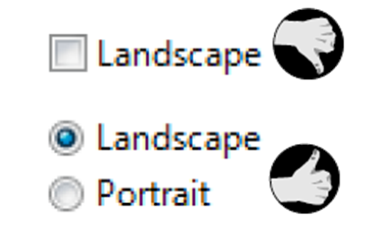
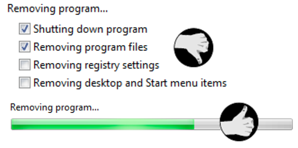
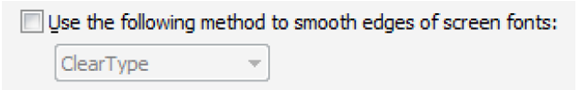
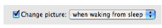

Checkbox
Checkbox
Gebruik
Als de gebruiker meerdere elementen gelijktijdig kan selecteren. Het is niet noodzakelijk een element te selecteren.
Regels en richtlijnen

- Gebruik dit enkel als u voldoende ruimte heeft om alle opties te tonen;
- Als u in twee kolommen werkt, maak die dan evenwichtig (3 en 4 is evenwichtig, 2 en 5 niet);
- Als u in twee kolommen werkt, plaats die ver genoeg van elkaar zodat ze geen groep vormen;
- Groepeer verbonden checkboxen (gebruik een groupbox, horizontale lijnen, witruimte maar volg de regels voor deze containers..);
- Plaats checkboxen verticaal en niet horizontaal. Horizontale checkboxen kunnen verwarrend zijn en verhogen de kans op een foute selectie;
- Zet de opties in een logische volgorde (bv meest gebruikte bovenaan). De logica van de gebruiker heeft voorrang;
- Label staat rechts en is kort maar duidelijk;
- Label is positief geschreven en actief (gebiedende stijl is heel gewoon). Uitzonderingen op het positieve zoals 'toon dit niet meer' .... kunnen ook;
- Plaats een dubbelpunt na een inleidende tekst;
- Andere controls die hieraan ondergeschikt zijn, plaatst u inspringend en laat het label van de checkbox eindigen op een dubbelpunt;
- Voorzie defaultwaarden als het mogelijk is.

- Een toggle systeem is geen goede werkwijze. De gebruiker moet dan bedenken wat de andere optie is. Dat is belastend en foutgevoelig. Gebruik in dergelijke situaties twee radiobuttons;
- Meer dan 8 opties;
- Meer dan 2 kolommen;
- Radiobuttons en checkboxen door elkaar;
- Checkbox die werkt als een radiobutton. Dit is verwarrend;
- Lange inleidende tekst (bv meer dan 1 lijn).
Voorbeelden
Checkboxen of radiobuttons

Bovenaan is één checkbox gebruikt om te schakelen tussen Portrait en Landscape. Onderaan zijn twee radiobuttons gebruikt. Dit laatste is beter en doet de gebruiker niet nadenken.
Horizontaal of verticaal

Plaatsing van de checkboxen - horizontaal moeilijker
Verkeerd gebruik als progress indicator

Gebruik een checkbox niet als progressindicator.
Ondergeschikte controls

Inleidende tekst

Created with the Personal Edition of HelpNDoc: Free PDF documentation generator